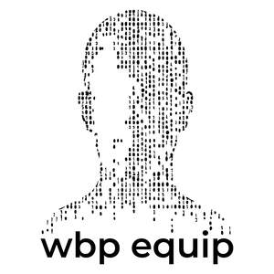
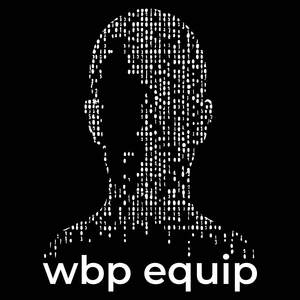

Trade Mark Journal No.2026/007 13 February 2026
UK00004331352 28 January 2026 (9,35,42)
Mark 1

Mark 2

Mark 3
- Class 9
- Software for the analysis of business data; Application software; Computer application software; Computer software applications; Downloadable computer software; Downloadable software; Computer software applications, downloadable; Downloadable computer software applications; Programs (Computer -) [downloadable software]; Computer programs [downloadable software]; Smartphone software; Software for smartphones; Mobile software; Downloadable computer software for the management of data; Software for the analysis of business data.
- Class 35
- Data collection services; Computer database management; Management of computer databases; Computer database management services; Business data analysis services; Business analysis services; Business data analysis; Analysis of business data; Business consultancy services relating to data processing; Business statistical information services; Statistical analysis and reporting services for business purposes; Analysis of business information; Data management services; Advisory services relating to business analysis; Business analysis; Provision of business data; Preparation of business statistical data; Analysis of business statistics; Business research services; Business statistical analysis; Data processing services; Data processing for the collection of data for business purposes; Business management analysis; Consultancy relating to business analysis; Analysis of business management systems; Computerised business information services; Business and commercial information services; Data collection services; Advisory services relating to data processing; Analysis of business trends; Assistance, advisory services and consultancy with regard to business analysis; On-line data processing services; Provision of business statistical information; Business research and advisory services; Advisory services relating to business management and business operations; Advisory services and information in business organization and management; Business intelligence services; Information services relating to data processing; Assessment analysis relating to business management; Dissemination of data relating to business; Compilation of statistical data relating to business; Business management and consultancy services; Business management consultancy services; Consultancy services regarding business strategies; Information and data compiling and analyzing relating to business management.
- Class 42
- Computer services for the analysis of data; Technical data analysis services; Computer analysis services; Software engineering services for data processing; Technological analysis services; Design services relating to data processing tools; Design services for data processing systems; Development services relating to data processing systems; Software engineering services for data processing programs; Computer programming services for commercial analysis and reporting; Design services relating to data processing systems; Technical advisory services relating to data processing; Advisory services relating to computer systems analysis; Consultancy services for analysing information systems; Design services relating to data processing test tools; Engineering services relating to data processing technology; Computer programming services for data warehousing; Design services relating to data processors.
WELLBEING PLACES EQUIP LIMITED